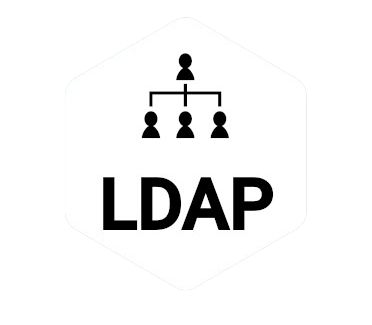
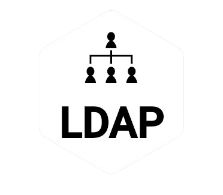

CATS
Architecture du projet
Présentation du projet CATS
Dans le cadre de ma troisième année du BUT informatique, j'ai eu l'opportunité de travailler sur le projet CATS. L'objectif principal était d'intégrer divers services tels que des applications web, des systèmes de dépôt de fichiers, et autres, sous une seule plateforme de Single Sign-On (SSO).
Nous avons entrepris de configurer ces services variés avec un outil de SSO, représentant un défi technique significatif.
Le projet a impliqué une équipe de quatre personnes, travaillant ensemble pour atteindre les objectifs fixés. Nos efforts ont été concentrés sur un management efficace et inclusif.
Les services pour le frontend et le backend ont été sélectionnés et configurés avec soin, incluant :
- Serveur Apache pour centraliser l'accès aux différents services,
- RocketChat pour optimiser la communication interne,
- NextCloud pour le stockage et la gestion des fichiers.
- Keycloak pour l'authentification des utilisateurs,
- LDAP comme annuaire pour stocker les informations des clients.
Ce projet a représenté un défi technique majeur et a été une occasion précieuse pour approfondir nos compétences en sécurité des systèmes, gestion de bases de données et communication d'équipe, nous préparant aux défis complexes et multidisciplinaires du monde informatique.
Compétences mises en avant
Le projet CATS a renforcé ma capacité à gérer et déployer des systèmes informatiques complexes. En optant pour la conteneurisation avec Docker, j'ai démontré des compétences avancées en matière de virtualisation et de portabilité des applications. L'automatisation du déploiement et de la configuration des services via des scripts Bash a également souligné mon aptitude à simplifier et optimiser les processus opérationnels.
La mise en place d'une stratégie de sécurité en deux volets pour le projet CATS m'a permis de développer une compréhension approfondie de la sécurité des systèmes d'information. D'une part, la formation et la sensibilisation des utilisateurs en matière de pratiques de sécurité ont amélioré mes compétences en matière de communication et d'éducation sur la cybersécurité. D'autre part, l'implémentation de protections techniques comme le proxy HTTPS m'a permis de renforcer mes connaissances en matière de sécurisation des communications réseau.
La conception et la mise en œuvre d'une politique de sauvegarde des données et d'un Plan de Relance des Activités (PRA) m'ont permis d'acquérir une expertise précieuse en matière de gestion de la continuité des affaires. Développer une solution client-serveur pour la sauvegarde des données et rédiger des PRA détaillés m'a doté d'une perspective stratégique sur la manière de maintenir l'opérationnalité et de minimiser les perturbations en cas de défaillance des services.
Le travail d'équipe et la collaboration ont été des aspects enrichissants du projet CATS. La gestion des défis liés à la dynamique de l'équipe a renforcé mes compétences en leadership et en gestion de conflits. Cela a également mis en évidence mon aptitude à travailler efficacement au sein d'une équipe, en contribuant activement à la réalisation des objectifs communs.
Enfin, le projet CATS a été une plateforme pour l'innovation technique et la résolution créative de
problèmes. Développer des solutions automatisées pour le déploiement et la sécurisation des services, ainsi que pour la sauvegarde et la récupération des données, a démontré ma capacité à aborder des défis techniques avec des solutions innovantes et efficaces.
Languages utilisées

 
